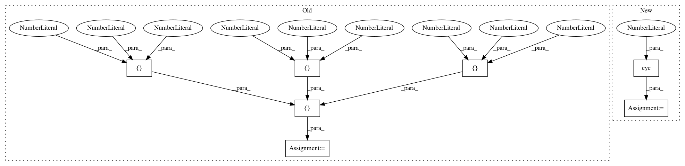

958eeaaa462b1c7f8f98dea8ba2cec5cf6ab32d8,nilearn/input_data/tests/test_nifti_spheres_masker.py,,test_sphere_extraction,#,19
Before Change
masker.fit()
// Test the transform
s = masker.transform(img)
mask = np.asarray(
[
[
[0, 0, 0],
[0, 1, 0],
[0, 0, 0]
],
[
[0, 1, 0],
[1, 1, 1],
[0, 1, 0]
],
[
[0, 0, 0],
[0, 1, 0],
[0, 0, 0]
]
], dtype=bool
)
assert_array_equal(s[:, 0], np.mean(data[mask], axis=0))
def test_anisotropic_sphere_extraction():
data = np.random.random((3, 3, 3, 5))
After Change
// Now with a mask
mask_img = np.zeros((3, 3, 3))
mask_img[1, :, :] = 1
mask_img = nibabel.Nifti1Image(mask_img, np.eye(4))
masker = NiftiSpheresMasker([(1, 1, 1)], radius=1, mask_img=mask_img)
masker.fit()
s = masker.transform(img)
assert_array_equal(s[:, 0],
np.mean(data[np.logical_and(mask, mask_img.get_data())],
axis=0))
In pattern: SUPERPATTERN
Frequency: 3
Non-data size: 7
Instances
Project Name: nilearn/nilearn
Commit Name: 958eeaaa462b1c7f8f98dea8ba2cec5cf6ab32d8
Time: 2015-05-13
Author: abraham.alexandre@gmail.com
File Name: nilearn/input_data/tests/test_nifti_spheres_masker.py
Class Name:
Method Name: test_sphere_extraction
Project Name: nipy/dipy
Commit Name: c7e318e6699c1e0048bf9278a951cb9029b59068
Time: 2012-06-13
Author: stefan@sun.ac.za
File Name: dipy/sims/voxel.py
Class Name:
Method Name: all_tensor_evecs
Project Name: geomstats/geomstats
Commit Name: b0d0053b1f1738640fc99fba642c83af42d10b22
Time: 2018-02-02
Author: ninamio78@gmail.com
File Name: geomstats/special_orthogonal_group.py
Class Name:
Method Name: skew_matrix_from_vector